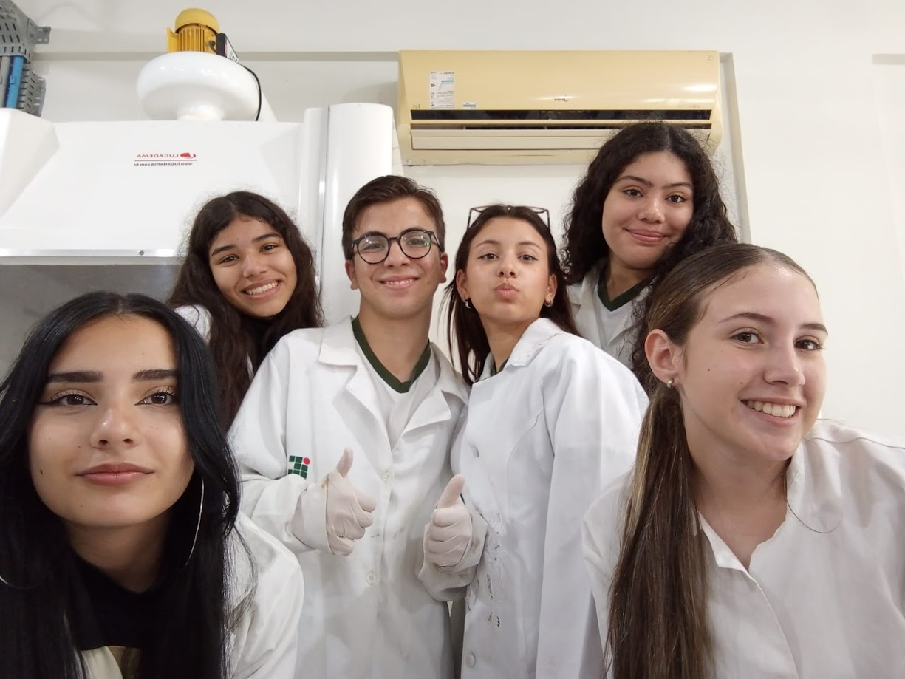

Sobre
O Projeto
Conheça mais sobre o projeto e sobre quem está por trás dele!
Off Web - 2025
Nosso projeto começou na primeira semana de julho de 2025, com o componente curricular projeto Integrador, nosso projeto também conta com as matérias de biologia e desenvolvimento web, nós reunimos um grupo e começamos a dar fundamentos para o site, pesquisando os conteúdos, cores, vídeos e sites de referência para o design. Nas próximas semanas fomos trabalhando em um design novo e criativo com a paleta de cores escolhida, e criando nossos textos de forma fluida e original com base nas pesquisas entre sites que fizemos, cada integrante do projeto ficou com uma parte da pesquisa e seus textos, todas as nossas reuniões foram registradas em uma ata onde nos organizamos e decidimos funções entre nós.
Como citado acima nossa intenção com o projeto é conscientizar sobre o uso de telas, de uma maneira visual e com linguagem de fácil acesso, nosso público alvo são as pessoas que tentam deixar o vício nas telas porém não acham formas fáceis, não temos intenção de fazer as pessoas terem uma relação ruim com as telas, apenas prezamos pelo equilíbrio entre o real e virtual. O Off Web é um projeto desenvolvido por seis alunos do curso técnico integrado de Informática para Internet, no Instituto Federal Catarinense, campus Araquari. Feito exclusivamente para o projeto "Vida Saudável", tudo partiu de uma vontade compartilhada pelo grupo de conscientizar sobre o uso de telas, de uma maneira visual e com linguagem de fácil acesso, explicando os malefícios e oferecendo soluções dinâmicas aos usuários. Após muito esforço e pesquisas, o Off Web nasce.
Desenvolvedores
Eduarda Gomes
Responsável por toda a administração das redes sociais do projeto. Criadora da logo e dos conteúdos postados na mídia.
Ester de Souza Viana
Responsável pela pesquisa, criação, HTML e CSS da página Perigos. Responsável pela criação das atas de reunião.
Giulia Marcos Corrêa
Responsável por toda pesquisa envolvendo a página Dados, HTML e CSS da mesma página. Também HTML e CSS das páginas Desconecte-se! e Aplicativos.
Halicya Gabrielly França Recalde
Responsável pela pesquisa de vídeos, malefícios e notícias. Também pela criação das páginas Início, Malefícios e Desconecte-se! (HTML e CSS em ambas).
Laura Luciano Werner
Líder do projeto. Responsável pela pesquisa, criação, HTML e CSS da página A Ciência por Trás do Uso, e pelo layout no Figma.
Tiago Martins Perin
Responsável pela pesquisa e página do figma da página Desconecta! , html e css da página Sobre O Projeto e pesquisa da paleta de cores.

O Off Web foi criado com muito esforço e cuidado para que somente informações verídicas e úteis fossem transmitidas. Nós da equipe Off Web esperamos que você possa aproveitar o site, e encontrar o que precisa aqui.